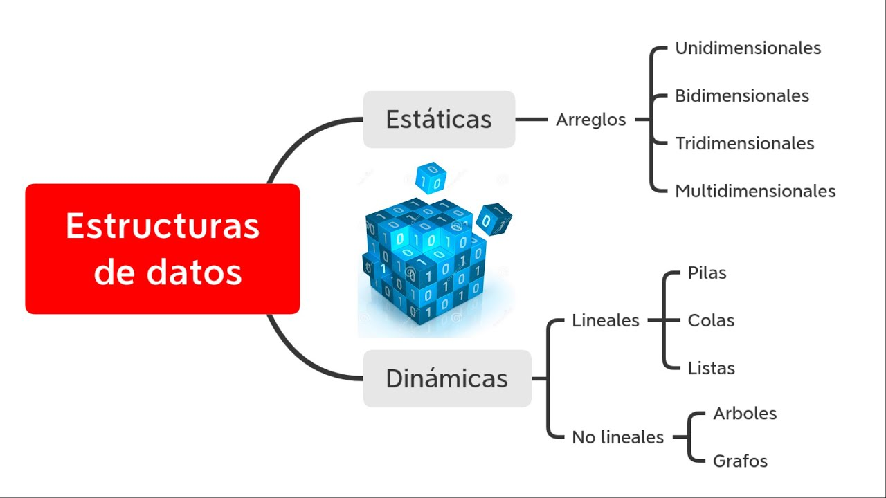

TIPOS

ESTRUCTURA DE DATOS ESTATICOS Y DINAMICAS
ESTATICAS: Son aquellas en las que el tamaño ocupado en memoria se define antes de que el programa se ejecute y no puede modificarse dicho tamaño durante la ejecución del programa.
Su principal característica es que ocupan solo una casilla de memoria, por lo tanto una variable simple hace referencia a un único valor a la vez,
DINAMICA: Las estructuras de datos dinámicas son aquellas en las que el tamaño podrá modificarse durante la ejecución del programa; teóricamente no hay límites a su tamaño, salvo el que impone la memoria disponible en la computadora.